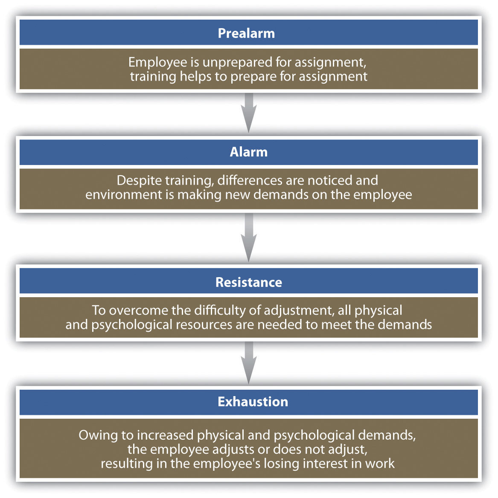

In an international environment, as long as proper research is performed, most HRM concepts can be applied. The important thing to consider is proper research and understanding of cultural, economic, and legal differences between countries. This section will provide an overview of some specific considerations for an international business, keeping in mind that with awareness, any HRM concept can be applied to the international environment. In addition, it is important to mention again that host-country offices should be in constant communication with home-country offices to ensure policies and practices are aligned with the organization.
As we discussed in Section 14.2 "Staffing Internationally", understanding which staffing strategy to use is the first aspect of hiring the right person for the overseas assignment. The ideal candidate for an overseas assignment normally has the following characteristics:
As we discussed earlier, when selecting an expatriate or a third-country national for the job, assuring that the candidate has the job factors, relational dimensions, motivational state, family situation, and language skills (or can learn) is a key consideration in hiring the right person. Some of the costs associated with failure of an expatriate or third-country national might include the following:
Because success on an overseas assignment has such complex factors, the selection process for this individual should be different from the selection process when hiring domestically. The process should start with the job analysis, as we discussed in Chapter 4 "Recruitment". The job analysis and job description should be different for the overseas assignment, since we know that certain competencies (besides technical ones) are important for success. Most of those competencies have little to do with the person’s ability to do the job but are related to his or her ability to do the job in a new cultural setting. These additional competencies (besides the skills needed for the job) may be considered:
Once the key success factors are determined, many of which can be based on previous overseas assignments successes, we can begin to develop a pool of internal candidates who possess the additional competencies needed for a successful overseas assignment.
To develop the pool, career development questions on the performance review can be asked to determine the employee’s interest in an overseas assignment. Interest is an important factor; otherwise, the chance of success is low. If there is interest, this person can be recorded as a possible applicant. An easy way to keep track of interested people is to keep a spreadsheet of interested parties, skills, languages spoken, cultural experiences, abilities, and how the candidates meet the competencies you have already developed.
Once an overseas assignment is open, you can view the pool of interested parties and choose the ones to interview who meet the competencies required for the particular assignment.
Figure 14.3 Sample Selection Process for Overseas Assignments
Much of the training may include cultural components, which were cited by 73 percent of successful expatriates as key ingredients to success.The Economist Intelligence Unit, Up or Out: Next Moves for the Modern Expatriate, 2010, accessed April 28, 2011, http://graphics.eiu.com/upload/eb/LON_PL_Regus_WEB2.pdf.
Training isn’t always easy, though. The goal is not to help someone learn a language or cultural traditions but to ensure they are immersed in the sociocultural aspects of the new culture they are living in. Roger N. Blakeney,Roger Blakeney, “Psychological Adjustment and Sociocultural Adaptation: Coping on International Assignments” (paper, Annual Meeting of Academy of Management, Atlanta, GA, 2006). an international business researcher, identifies two main pathways to adapting to a new culture. First, people adjust quickly from the psychological perspective but not the social one. Blakeney argues that adjusting solely from the psychological perspective does not make an effective expatriate. Although it may take more time to adjust, he says that to be fully immersed and to fully understand and be productive in a culture, the expatriate must also have sociocultural adaption. In other words, someone who can adjust from a sociocultural perspective ends up performing better because he or she has a deeper level of understanding of the culture. Determining whether your candidate can gain this deeper level would figure in your selection process.
Figure 14.4 Blakeney’s Model of Psychological versus Sociocultural Adaption
Source: Roger Blakeney, “Psychological Adjustment and Sociocultural Adaptation: Coping on International Assignments” (paper, Annual Meeting of Academy of Management, Atlanta, GA, 2006).
One of the key decisions in any global organization is whether training should be performed in-house or an outside company should be hired to provide the training. For example, Communicaid offers online and on-site training on a variety of topics listed. Whether in-house or external training is performed, there are five main components of training someone for an overseas assignment:
Training on languages is a basic yet necessary factor to the success of the assignment. Although to many, English is the international business language, we shouldn’t discount the ability to speak the language of the country in which one is living. Consider Japan’s largest online retailer, Rakuten, Inc. It mandated that English will be the standard language by March 2012.Jeff Thredgold, “English Is Increasingly the International Language of Business,” Deseret News, December 14, 2010, accessed August 11, 2011, http://www.deseretnews.com/article/700091766/English-is-increasingly-the-international-language-of-business.html. Other employers, such as Nissan and Sony, have made similar mandates or have already implemented an English-only policy. Despite this, a large percentage of your employee’s time will be spent outside work, where mastery of the language is important to enjoy living in another country. In addition, being able to discuss and negotiate in the mother tongue of the country can give your employee greater advantages when working on an overseas assignment. Part of language, as we discussed in Chapter 9, isn’t only about what you say but also includes all the nonverbal aspects of language. Consider the following examples:
The goal of cultural training is to train employees what the “norms” are in a particular culture. Many of these norms come from history, past experience, and values. Cultural training can include any of the following topics:
Cultural training is important. Although cultural implications are not often discussed openly, not understanding the culture can harm the success of a manager when on overseas assignment. For example, when Revlon expanded its business into Brazil, one of the first products it marketed was a Camellia flower scented perfume. What the expatriate managers didn’t realize is that the Camellia flower is used for funerals, so of course, the product failed in that country.Sudipta Roy, “Brand Failures: A Consumer Perspective to Formulate a MNC Entry Strategy” (postgraduate diploma, XLRI School of Business and Human Resources, 1998), accessed August 12, 2011, http://sudiptaroy.tripod.com/dissfin.pdf. Cultural implications, such as management style, are not always so obvious. Consider the US manager who went to Mexico to manage a production line. He applied the same management style that worked well in America, asking a lot of questions and opinions of employees. When employees started to quit, he found out later that employees expect managers to be the authority figure, and when the manager asked questions, they assumed he didn’t know what he was doing.
Training on the goals and expectations for the expatriate worker is important. Since most individuals take an overseas assignment to boost their careers, having clear expectations and understanding of what they are expected to accomplish sets the expatriate up for success.
Because moving to a new place, especially a new country, is stressful, it is important to train the employee on managing stress, homesickness, culture shock, and likely a larger workload than the employee may have had at home. Some stress results from insecurity and homesickness. It is important to note that much of this stress occurs on the family as well. The expatriate may be performing and adjusting well, but if the family isn’t, this can cause greater stress on the employee, resulting in a failed assignment. Four stages of expatriate stress identified in the Selyes model, the General Adaption Syndrome, are shown in Figure 14.5 "General Adaption Syndrome to Explain Expatriate Stress". The success of overseas employees depends greatly on their ability to adjust, and training employees on the stages of adjustment they will feel may help ease this problem.
These two videos discuss practical implications of cultural differences.
Figure 14.5 General Adaption Syndrome to Explain Expatriate Stress
Source: Bala Koteswari and Mousumi Bhattacharya, “Managing Expatriate Stress,” Delhi Business Review 8, no. 1 (2007): 89–98.
Spouses and children of the employee may also experience much of the stress the expatriate feels. Children’s attendance at new schools and lack of social networks, as well as possible sacrifice of a spouse’s career goal, can negatively impact the assignment. Many companies offer training not only for the employee but for the entire family when engaging in an overseas assignment. For example, global technology and manufacturing company Honeywell offers employees and their families a two-day cultural orientation on the region they will be living in.Leslie Gross Klaff, “The Right Way to Bring Expats Home,” BNET, July 2002, accessed August 12, 2011, http://findarticles.com/p/articles/mi_m0FXS/is_7_81/ai_89269493/. Some of the reasons for lack of adjustment by family members might include the following:
The ability of the organization to meet these family needs makes for a more successful assignment. For example, development of an overseas network to provide social outlets, activities, schooling and housing options, assignment of mentors to the spouse, and other methods can help ease the transition.
Finally, repatriationThe process of helping employees make the transition to their home country. is the process of helping employees make the transition to their home country. Many employees experience reverse culture shockRefers to the psychological phenomenon that can lead to feelings of fear, helplessness, irritability, and disorientation when an expatriate returns home. upon returning home, which is a psychological phenomenon that can lead to feelings of fear, helplessness, irritability, and disorientation. All these factors can cause employees to leave the organization soon after returning from an assignment, and to take their knowledge with them. One problem with repatriation is that the expatriate and family have assumed things stayed the same at home, while in fact friends may have moved, friends changed, or new managers may have been hired along with new employees. Although the manager may be on the same level as other managers when he or she returns, the manager may have less informal authority and clout than managers who have been working in the particular office for a period of time. An effective repatriation program can cost $3,500 to $10,000 per family, but the investment is worth it given the critical skills the managers will have gained and can share with the organization. In fact, many expatriates fill leadership positions within organizations, leveraging the skills they gained overseas. One such example is FedEx president and CEO David Bronczek and executive vice president Michael Drucker. Tom Mullady, the manager of international compensation planning at FedEx, makes the case for a good repatriation program when he says, “As we become more and more global, it shows that experience overseas is leveraged back home.” Leslie Gross Klaff, “The Right Way to Bring Expats Home,” BNET, July 2002, accessed August 12, 2011, http://findarticles.com/p/articles/mi_m0FXS/is_7_81/ai_89269493/
Repatriation planning should happen before the employee leaves on assignment and should be a continuous process throughout the assignment and upon return. The process can include the following:
It is also important to note that offering an employee an international assignment can help develop that person’s understanding of the business, management style, and other business-related development. Working overseas can be a crucial component to succession planning. It can also be a morale booster for other employees, who see that the chosen expatriate is further able to develop his or her career within the organization.
While the focus of this section has been on expatriate assignments, the same information on training is true for third-country nationals.
If it is decided that host-country nationals will be hired, different training considerations might occur. For example, will they spend some time at your domestic corporate headquarters to learn the business, then apply what they learned when they go home? Or, does it make more sense to send a domestic manager overseas to train the host-country manager and staff? Training will obviously vary based on the type of business and the country, and it may make sense to gain input from host-country managers as opposed to developing training on your own. As we have already discussed in this chapter, an understanding of the cultural components is the first step to developing training that can be utilized in any country.
There are a few options when choosing compensation for a global business. The first option is to maintain companywide pay scales and policies, so for example, all sales staff are paid the same no matter what country they are in. This can reduce inequalities and simplify recording keeping, but it does not address some key issues. First, this compensation policy does not address that it can be much more expensive to live in one place versus another. A salesperson working in Japan has much higher living expenses than a salesperson working in Peru, for example. As a result, the majority of organizations thus choose to use a pay banding system based on regions, such as South America, Europe, and North America. This is called a localized compensation strategyA international compensation strategy that uses regional or local cost-of-living information to pay employees.. Microsoft and Kraft Foods both use this approach. This method provides the best balance of cost-of-living considerations.
However, regional pay banding is not necessarily the ideal solution if the goal is to motivate expatriates to move. For example, if the employee has been asked to move from Japan to Peru and the salary is different, by half, for example, there is little motivation for that employee to want to take an assignment in Peru, thus limiting the potential benefits of mobility for employees and for the company.
One possible option is to pay a similar base salary companywide or regionwide and offer expatriates an allowance based on specific market conditions in each country.J. Cartland, “Reward Policies in a Global Corporation,” Business Quarterly, Autumn 1993, 93–96. This is called the balance sheet approachExpatriates are offered a similar base salary companywide or region wide and are given an allowance based on specific market conditions in each country.. With this compensation approach, the idea is that the expatriate should have the same standard of living that he or she would have had at home. Four groups of expenses are looked at in this approach:
The HR professional would estimate these expenses within the home country and costs for the same items in the host country. The employer then pays differences. In addition, the base salary will normally be in the same range as the home-country salary, and an overseas premiumAn extra amount paid to an expatriate for accepting an overseas assignment. might be paid owing to the challenge of an overseas assignment. An overseas premium is an additional bonus for agreeing to take an overseas assignment. There are many companies specializing in cost-of-living data, such as Mercer Reports. It provides cost-of-living information at a cost of $600 per year. Table 14.6 "The Balance Sheet Approach to Compensation" shows a hypothetical example of how the balance sheet approach would work.
Table 14.6 The Balance Sheet Approach to Compensation
| Chicago, IL | Tokyo | Allowance | |
|---|---|---|---|
| Tax rate | 30% | 35% | 5% or $288/month |
| Housing | $1250 | $1800 | $550 |
| Base salary | $5400 | $5,750 | $350 |
| Overseas premium | 15% | $810 | |
| Total allowance | $1998 | ||
| Total salary and allowance | $5400 | $7748 |
Other compensation issues, which will vary greatly from country to country, might include the following:
Figure 14.6 Hourly World Compensation Comparisons for Manufacturing Jobs
Source: Bureau of Labor Statistics, Division of International Labor Comparisons, International Comparisons of Hourly Compensation costs in Manufacturing, 2009, http://www.bls.gov/news.release/ichcc.toc.htm (accessed September 16, 2011).
The challenge in overseas performance evaluations is determining who should rate the performance of the expatriate. While it might make sense to have the host-country employees and managers rate the expatriate, cultural differences may make this process ineffective. Cultural challenges may make the host country rate the expatriate more harshly, or in some cases, such as Indonesia, harmony is more important than productivity, so it may be likely an Indonesia employee or manager rates the expatriate higher, to keep harmony in the workplace.George Whitfield, “Do as I Say, Not as I Do: Annual Performance Appraisal and Evaluation in Indonesia” n.d., Living in Indonesia, accessed August 11, 2011, http://www.expat.or.id/business/annualperformanceappraisal.html.
If the home-country manager rates the performance of the expatriate, he or she may not have a clear indication of the performance, since the manager and expatriate do not work together on a day-to-day basis. A study performed by Gregersen, Hite, and Black suggests that a balanced set of raters from host and home countries and more frequent appraisals relate positively to the accuracy of performance evaluations.Hal Gregersen, Julie Hite, and Steward Black, “Expatriate Performance Appraisal in US Multinational Firms,” Journal of International Business Studies 27, no. 4 (1996): 711–38. They also suggest that the use of a standardized form relates negatively to perceived accuracy. Carrie Shearer, an international HR expert, concurs by stating that the standardized form, if used, should also include special aspects for the expatriate manager, such as how well the expatriate fits in with the culture and adaptation ability.Carrie Shearer, “Expat Performance Appraisal: A Two Tier Process?” October 8, 2004, Expatrica.com, accessed August 12, 2011, http://www.expatica.com/hr/story/expat-performance-appraisal-a-two-tier-process-10529.html.
Besides determining who should rate the expatriate’s performance, the HR professional should determine the criteria for evaluating the expatriate. Since it is likely the expatriate’s job will be different overseas, the previous criteria used may not be helpful in the evaluation process. The criteria used to rate the performance should be determined ahead of time, before the expatriate leaves on assignment. This is part of the training process we discussed earlier. Having a clear picture of the rating criteria for an overseas assignment makes it both useful for the development of the employee and for the organization as a tool. A performance appraisal also offers a good opportunity for the organization to obtain feedback about how well the assignment is going and to determine whether enough support is being provided to the expatriate.
As we have already alluded to in this chapter, understanding of laws and how they relate to host-country employees and expatriates can vary from country to country. Because of this, individual research on laws in the specific countries is necessary to ensure adherence:
As you can tell from this list, the considerable HRM factors when doing business overseas should be thoroughly researched.
One important factor worth mentioning here is labor unions. As you remember from Chapter 12 "Working with Labor Unions", labor unions have declined in membership in the United States. Collective bargaining is the process of developing an employment contract between a union and management within an organization. The process of collective bargaining can range from little government involvement to extreme government involvement as in France, for example, where some of the labor unions are closely tied with political parties in the country.
Some countries, such as Germany, engage in codeterminationThe practice and legal requirement of company shareholders’ and employees’ being represented in equal numbers on the boards of organizations., mandated by the government. Codetermination is the practice of company shareholders’ and employees’ being represented in equal numbers on the boards of organizations, for organizations with five hundred or more employees. The advantage of this system is the sharing of power throughout all levels of the organization; however, some critics feel it is not the place of government to tell companies how their corporation should be run. The goal of such a mandate is to reduce labor conflict issues and increase bargaining power of workers.
Taxation of expatriates is an important aspect of international HRM. Of course, taxes are different in every country, and it is up to the HR professional to know how taxes will affect the compensation of the expatriate. The United States has income tax treaties with forty-two countries, meaning taxing authorities of treaty countries can share information (such as income and foreign taxes paid) on residents living in other countries. US citizens must file a tax return, even if they have not lived in the United States during the tax year. US taxpayers claim over $90 billion in foreign tax credits on a yearly basis.Internal Revenue Service, “Foreign Tax Credit,” accessed August 13, 2011, http://www.irs.gov/businesses/article/0,,id=183263,00.html. Foreign tax creditsA tax credit in the United States that allows expatriates working abroad to claim taxes paid overseas on their US tax forms, reducing or eliminating double taxation. allow expatriates working abroad to claim taxes paid overseas on their US tax forms, reducing or eliminating double taxation. Many organizations with expatriate workers choose to enlist the help of tax accountants for their workers to ensure workers are paying the correct amount of taxes both abroad and in the United States.
Table 14.7 Examples of HRM-Related Law Differences between the United States and China
| United States | China* | |
|---|---|---|
| Employment Contracts | Most states have at-will employment | Contract employment system. All employees must have a written contract |
| Layoffs | No severance required | Company must be on verge of bankruptcy before it can lay off employees |
| Two years of service required to pay severance; more than five years of experience requires a long service payment | ||
| Termination | Employment at will | Employees can only be terminated for cause, and cause must be clearly proved. They must be given 30 days’ notice, except in the case of extreme circumstances, like theft |
| Overtime | None required for salaried employees | Employees who work more than 40 hours must be paid overtime |
| Salary | Up to individual company | A 13-month bonus is customary, but not required, right before the Chinese New Year |
| Vacation | No governmental requirement | Mandated by government: |
| First year: no vacation | ||
| Year 2–9: 5 days | ||
| Years 10–19: 10 days | ||
| 20 years or more: 15 days | ||
| Paid Holidays | None required by law | 3 total. Chinese New Year, International Labor Day, and National Day. However, workers must “make up” the days by working a day on the previous weekend |
| Social Security | Required by law for employer and employee to pay into social security | Greater percentages are paid by employer: 22% of salary paid by employer, 8% paid by employee |
| Discrimination Laws | Per EEOC, cannot discriminate based on race, sex, age, genetic information, or other protected groups | Laws are in place but not enforced |
| Maternity Leave | Family and Medical Leave Act allows 12 weeks | 90 days’ maternity leave |
| *In China, all employees are covered by the Labor Contract Law. | ||
Source: Harris and Moure, pllc, “China Employment Contracts, Ten Things to Consider,” China Law Blog, http://www.chinalawblog.com/2010/04/china_employment_contracts_ten.html (accessed August 13, 2011) and Cindy Zhang, “Employment Law in China,” June 21, 2011, http://www.attorneycz.com/ (accessed August 13, 2011).
As you learned earlier, providing training for the expatriate is an important part of a successful assignment. However, many of the day-to-day aspects of living are important, too.
One of the most important logistical aspects is to make sure the employee can legally work in the country where you will be sending him or her, and ensuring his or her family has appropriate documentation as well. A visaPermission from the host country to visit, live, or work in that country. is permission from the host country to visit, live, or work in that country. Obtaining visas is normally the job of an HR professional. For example, the US Department of State and the majority of countries require that all US citizens have a valid passport to travel to a foreign country. This is the first step to ensuring your host-country national or third-country national can travel and work in that country.
Next, understanding the different types of visas is a component to this process. For example, the United States offers a Visa Waiver Program (VWP)Allows some nationals of thirty-six participating countries to travel to the United States for stays of less than ninety days. that allows some nationals of thirty-six participating countries to travel to the United States for stays of less than ninety days. Iceland, Singapore, and France are examples of countries that participate in this program. For most host-national assignments, however, this type of visa may not be long enough, which then requires research of the individual country. It is important to mention that most countries have several types of visas, such as the following:
The visa process and time line can vary greatly depending on the country for which the visa is required. For example, obtaining a visa to work in China may take six months or longer. The best place to research this topic is on the country’s embassy website.
Besides ensuring the expatriate can legally work in the country, other considerations are worth mentioning as well:
In any situation, support from the HR professional will help make the assignment a success, which shows that HRM practices should be aligned with company goals.
Visa Blues
Your manager has just notified you that one of your marketing managers has taken an assignment in China to work for one year. You tell your manager you will begin the visa process for employment. She disagrees and tells you it will be quicker to just get a tourist visa. You mention this is illegal and could get the employee and company in trouble, but she insists on your getting a tourist visa so the employee can leave within the month. How would you handle this?
How Would You Handle This?
https://api.wistia.com/v1/medias/1361075/embedThe author discusses the How Would You Handle This situation in this chapter at: https://api.wistia.com/v1/medias/1361075/embed.